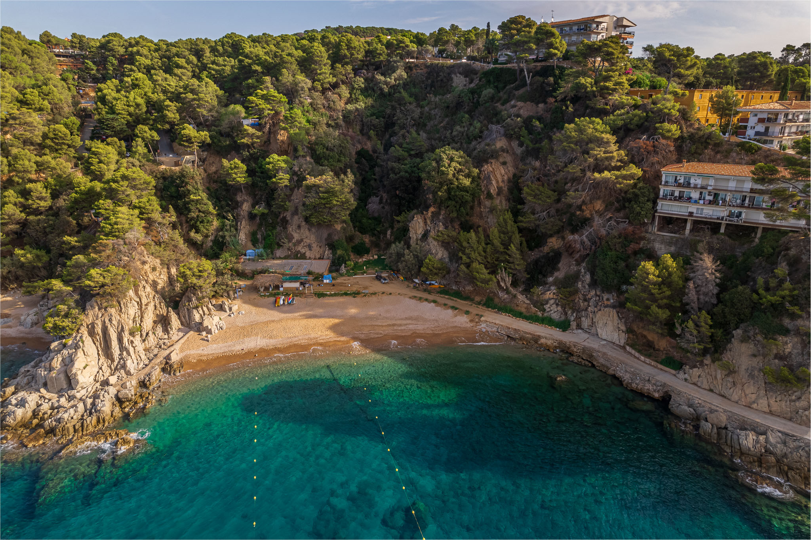
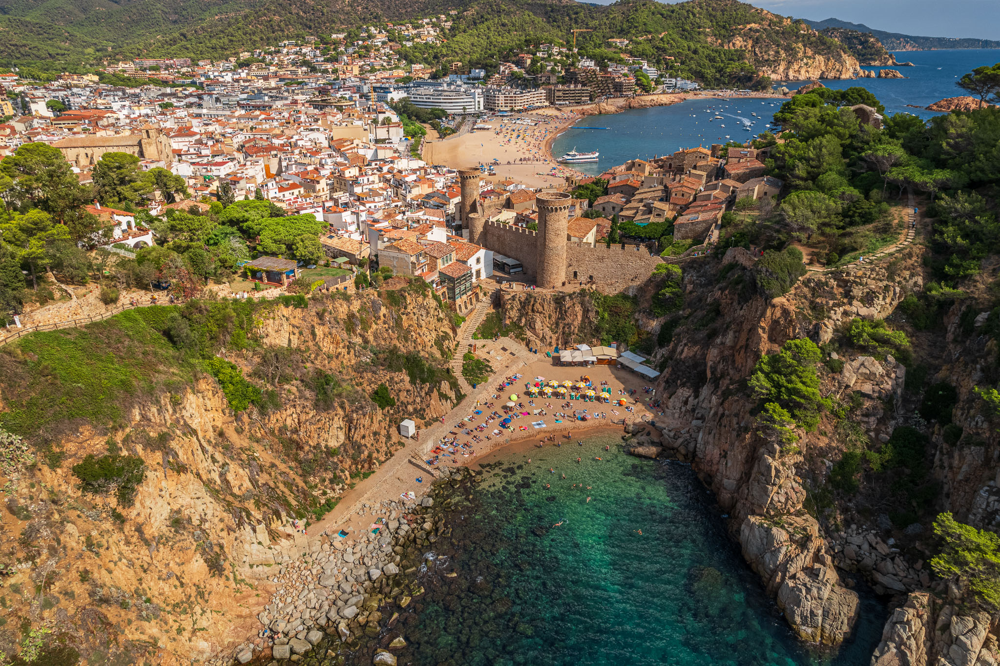
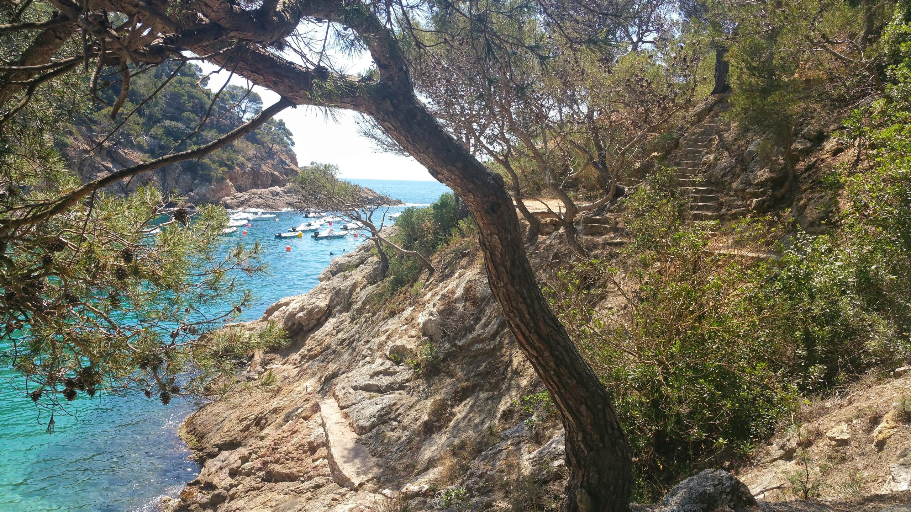
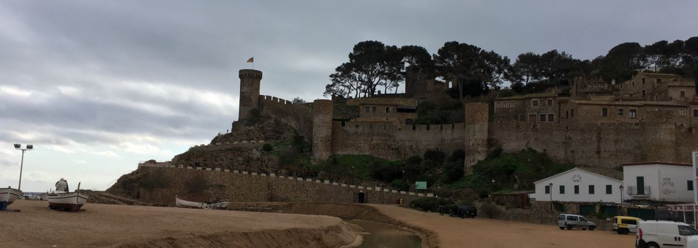
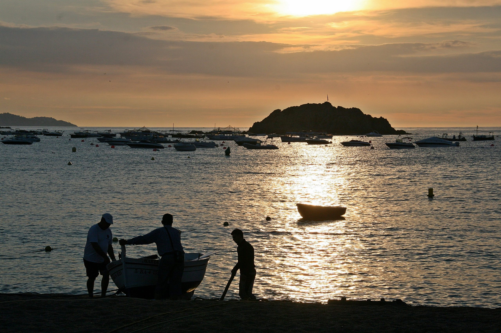

Guía exclusiva para nuestros huéspedes
Descubre los lugares que solo los locales conocen. Lejos de las rutas turísticas, donde la Costa Brava muestra su verdadera esencia entre acantilados escondidos, calas de agua cristalina y miradores donde el tiempo parece detenerse.
Tossa de Mar es mucho más que su famosa Vila Vella y sus playas principales. Durante generaciones, pescadores, senderistas y vecinos han guardado celosamente pequeños paraísos escondidos que no aparecen en las guías convencionales. Estos cinco rincones son lugares reales, accesibles para quien se tome la molestia de buscarlos, y que conservan esa magia auténtica que hace especial la Costa Brava.
Cada uno de ellos tiene su propia personalidad: el silencio absoluto de una cala virgen, la luz dorada de un atardecer sin turistas, el olor a salitre de un puerto que aún huele a pesca auténtica. No son atracciones, son experiencias. Te recomendamos llevar calzado cómodo, una botella de agua y, sobre todo, el ánimo de quien sabe que lo mejor de un viaje a veces está en lo que no aparece en los folletos.
Esta guía ha sido elaborada con la colaboración de vecinos de Tossa, pescadores que llevan décadas saliendo cada amanecer y senderistas que conocen cada piedra del camino de ronda. Respeta su entorno, no dejes basura y recuerda que el silencio es el mejor regalo que puedes llevar contigo.
5 rincones secretos · Cala Bona · Mirador de Codolar · Camino de Ronda · Muralla al atardecer · Rincón de los pescadores

A menos de 15 minutos caminando desde el faro de Tossa, Cala Bona es una pequeña bahía de cantos rodados y agua cristalina que muy pocos turistas llegan a conocer. El acceso requiere descender por un sendero natural entre pinos y rocas, lo que la convierte en un refugio de paz incluso en pleno agosto, cuando las playas principales están a rebosar.
El agua aquí tiene un tono turquesa diferente al del resto de la costa, más profundo y transparente. Los fondos rocosos son un auténtico acuario natural: si te acercas con gafas de snorkel, verás sargos, castañuelas y pequeños pulpos escondidos entre las grietas. La cala está orientada de forma que recibe el sol de mañana, pero a mediodía una sombra natural de los acantilados la protege del calor excesivo.
Consejo local: Lleva calzado de trekking con suela de goma, el sendero tiene tramos con piedras sueltas. Trae una neverita pequeña porque no hay servicios ni chiringuito, pero precisamente por eso conserva esa magia virgen. Si eres de madrugar, entre las 8 y las 9 de la mañana es posible que encuentres la cala completamente para ti.
Cómo llegar: Desde la Vila Vella, sube hacia el faro por el camino de ronda. Antes de llegar al faro, busca un desvío a la izquierda con una pequeña señal de senderismo de madera. El camino está marcado con hitos de piedra, pero es fácil perderse si no prestas atención. Aparca en el parking del faro si vienes en coche.

Mientras todo el mundo se agolpa en los miradores oficiales de la Vila Vella para hacer la foto de rigor, los locales suben al Mirador de Codolar, un rincón elevado entre la urbanización de igual nombre y el camino de ronda que ofrece una perspectiva completamente diferente de Tossa. Desde aquí, la vista del mar abierto, los acantilados de Punta de la Creu y la silueta del castillo desde el ángulo norte es simplemente espectacular.
Este mirador no está señalizado en los mapas turísticos, ni tiene barandilla de seguridad, ni tienda de souvenirs. Es simplemente un saliente de roca donde los pescadores locales se han reunido durante décadas para observar el estado del mar antes de salir a faenar. Esa ausencia de infraestructura es precisamente lo que lo hace especial: te sientes en el borde del mundo, con el Mediterráneo a tus pies y el viento en la cara.
Consejo local: Es el lugar favorito de los pescadores para observar el estado del mar antes de salir. Si subes al amanecer (sobre las 6:30 en verano), verás cómo la luz dorada ilumina progresivamente las rocas y, si tienes suerte, grupos de delfines nadando en la distancia. Lleva una chaqueta cortavientos, el viento de tramontana aquí es fuerte incluso en días calurosos.
Cómo llegar: Desde la carretera de Lloret (GI-682), toma el desvío hacia la urbanización Codolar justo después del kilómetro 12. Aparca al final de la calle principal (hay espacio para 4-5 coches) y sube a pie por el sendero de tierra que aparece a tu derecha durante unos 5 minutos. El camino está desdibujado, pero sigue la línea de la valla de piedra seca.

El tramo del Camino de Ronda que une Tossa con Cala Pola es una joya poco transitada que conserva la esencia original de la Costa Brava antes del turismo masivo. Durante casi una hora de caminata suave, el sendero serpentea entre pinos marítimos de troncos retorcidos, romeros silvestres que perfuman el aire y brezos que florecen en primavera, ofreciendo vistas constantes al Mediterráneo en todo su esplendor azul intenso.
Este camino fue históricamente utilizado por contrabandistas que movían mercancía entre las calas escondidas de la costa durante la posguerra. Hoy, sus únicos "contrabandistas" son excursionistas silenciosos y algún corredor de montaña madrugador. El silencio es absoluto, interrumpido solo por el viento entre las ramas de pino y el rumor lejano del mar contra los acantilados. Es uno de los paisajes mejor conservados de toda la Costa Brava.
Consejo local: No hace falta llegar hasta Cala Pola para disfrutar. A unos 25 minutos de caminata encontrarás una pequeña explanada rocosa conocida entre los senderistas como "la terraza", perfecta para sentarse, leer un libro y darte un baño en total soledad. Si vas en primavera, busca las orquídeas silvestres que crecen entre las rocas del tramo final.
Cómo llegar: Toma el Camino de Ronda desde la playa Gran, justo al final del paseo marítimo donde hay una señal de madera. El sendero está bien marcado con hitos blancos y rojos del GR-92. El tramo hasta Cala Pola tiene algunas subidas moderadas pero no requiere equipo especial. En verano, empieza antes de las 9 de la mañana para evitar el calor.

Todo el mundo visita la Vila Vella a mediodía, cuando los grupos de turistas suben en masa a la muralla para hacerse la foto de rigor con el mar de fondo. Pero los que realmente conocen Tossa suben una hora antes de la puesta de sol, cuando la luz empieza a tornarse dorada y los últimos visitantes del día ya han bajado hacia sus hoteles. A esa hora, el calor ha remitido, las piedras centenarias de la fortaleza se tiñen de un naranja intenso y el mar refleja la luz como un espejo perfecto.
La muralla de Tossa es uno de los pocos ejemplos de arquitectura militar medieval que se conservan completamente en la Costa Brava, y fue declarada Monumento Histórico Artístico Nacional en 1931. Caminar por su tramo norte, alejado de la zona más transitada, es como transportarse seis siglos atrás. El silencio es tan profundo que se oyen las olas rompiendo contra las rocas de la Mar Menuda, 40 metros más abajo.
Consejo local: No te quedes solo en el mirador principal. Camina por el lado norte de la muralla, donde hay un pequeño balcón natural de piedra conocido como "el beso" desde el que ves la playa de la Mar Menuda desde arriba. Es el sitio favorito de los fotógrafos locales y de las parejas que buscan un rincón romántico. En verano, la puesta de sol es sobre las 21:00; en invierno, sobre las 17:30.
Cómo llegar: Entra por la puerta principal de la Vila Vella (Portal de la Tossa) y sube a la muralla por la escalera principal. El acceso al tramo norte está justo después de la iglesia románica de San Vicente, por una escalera de piedra algo escondida detrás de un seto de buganvilla. Si llegas y encuentras la puerta de acceso cerrada con candado, no te preocupes: el guarda suele abrir hasta media hora después de la puesta de sol.

En el extremo este del puerto deportivo, allí donde termina el paseo marítimo y empiezan las rocas que se adentran en el mar, se congregan cada mañana los pescadores locales. No es un mercado turístico con lonjas y carteles: es un punto de encuentro real donde se vende el pescado de la noche a precios simbólicos, donde los ancianos del pueblo se sientan en cajas de madera a reparar redes y a compartir historias de naufragios, temporales y ballenas avistadas en los años sesenta.
El olor a salitre y a gasoil de las barcas se mezcla con el de la sardina recién capturada. Los gaviotas revolotean entre las embarcaciones esperando algún desperdicio, y los gatos del puerto —todos conocidos por los pescadores— se pasean entre las cuerdas y los cabos. Es uno de los pocos lugares de la Costa Brava donde todavía se respira la auténtica vida marinera del siglo pasado, antes de que el turismo transformara los pueblos de pescadores en destinos de masas.
Consejo local: Acércate entre las 7 y las 9 de la mañana, cuando los barcos acaban de llegar con la pesca nocturna. Lleva efectivo (pocos aceptan tarjeta) y pregunta directamente por "la sardina de Tossa" o "el boquerón de esta noche". Si eres simpático y les preguntas con respeto, algún pescador mayor te invitará a conocer su barca o te contará dónde comer el mejor suquet de peix del pueblo, una receta que no encontrarás en ninguna carta turística.
Cómo llegar: Desde el puerto principal de Tossa, camina hacia el este pasando todos los restaurantes y tiendas de souvenirs, hasta el final del espigón donde empieza la zona rocosa. Verás las barcas amarradas y un pequeño grupo de personas con cestas de plástico esperando la llegada de los barcos. Es fácil pasarlo por alto si vas con prisa, pero imposible de olvidar una vez lo descubres.
Estos cinco rincones son solo el principio. Tossa de Mar guarda docenas de pequeños secretos entre sus acantilados, sus calas escondidas y sus callejuelas medievales. Si quieres descubrirlos todos, reserva directamente en nuestra web y te daremos la guía ampliada con mapas detallados, horarios exactos de las puestas de sol en cada mirador y los restaurantes locales donde comen los pescadores cuando terminan su jornada.
alojamientostossademar.com